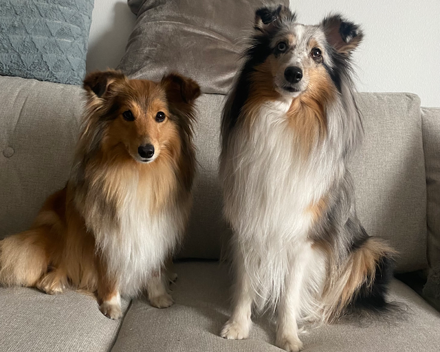

Keitä olemme?
Olemme kahden ystävysten perustama yritys ja tarinamme alkoi yhteisestä harrastuksesta: joogasta. Tutustuimme joogan parissa, jossa ystävystyimme. Idea pentujoogaan tuli siitä, kun kuulimme tämän olevan ulkomailla hitti niin halusimme kehittää konseptin myös Tampereelle, koska rakastamme itse koiria! Henkilökuntamme koostuu tällä hetkellä yrityksen perustajista Essi ja Liisa. Joukkoomme kuuluu myös ihanat ohjaajat Anne ja Matilda.
Mistä nimi RautaRakki tulee?
Sana "rauta" tulee joogaosuudesta ja "rakki", rakkaudesta koiriin sekä huumorintajusta. Halu oli keksiä yrityksellemme hauska nimi!
Tietoa koirista
Meillä on vastuullinen yhteistyö tutun kennelin kanssa, jotta pääsemme järjestämään pentujoogaa turvallisesti ja koirien hyvinvointi edellä! Koemme myös pentujen hyötyvän sosiaalisesta kanssakäymisestä meidän asiakkaiden kanssa. Tilamme ovat koiraystävälliset! Ohessa kuva omista koiristamme, joiden pentuja voi mahdollisesti esiintyä joogassamme myöhemmin. Järjestämme myös tunteja, johon tuodaan oma koira mukaan niin saadaan aikaiseksi mukava yhteinen harrastus! Näillä tunneilla ei pentuja mukana valmiiksi, siis tuothan oman rakkaan lemmikin mukaan!
